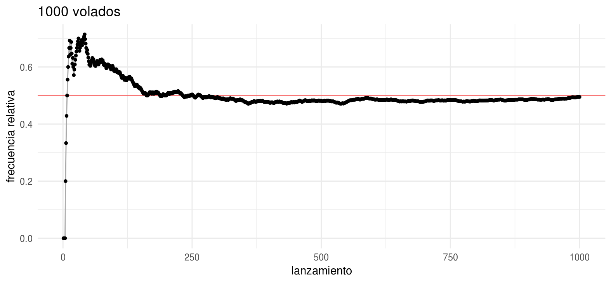
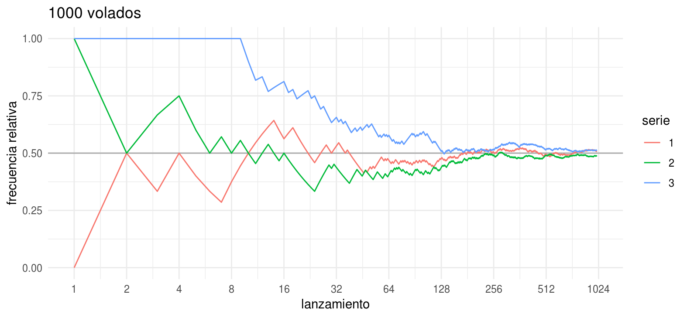
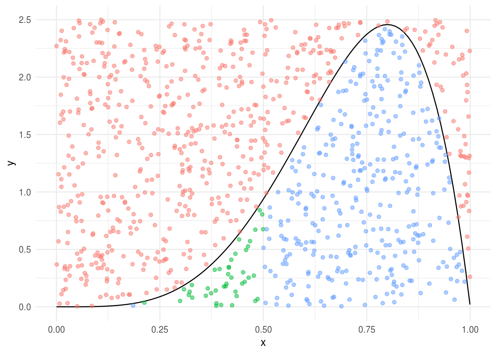

Sección 5 Introducción a probabilidad
“Probabilidad es el lenguaje matemático para cuantificar incertidumbre.” -Wasserman
En estas notas hacemos un repaso de conceptos de probabilidad con un enfoque computacional:
- Terminología de probabilidad: espacio de resultados, eventos, funciones de
probabilidad.
- Interpretación frecuentista de probabilidad.
- Variables aleatorias: a qué se refieren.
Espacio de resultados y eventos
El espacio de resultados \(\Omega\) es el conjunto de posibles resultados de un experimento aleatorio. A los puntos \(\omega \in \Omega\) se les conoce como resultados muestrales, realizaciones o elementos.
Ejemplo: Si lanzamos una moneda dos veces entonces el espacio de resultados es:
\[\Omega = \{AA, AS, SA, SS \}\]
Un evento es un subconjunto del espacio muestral, los eventos usualmente se denotan por letras mayúsculas.
El evento: que la primer lanzamiento resulte águila es
\[A=\{AA, AS\}\]
Eventos equiprobables
Históricamente la primera aproximación a la probabilidad ocurrió con apuestas y juegos de azar, y se veía como una extensión de la idea de proporción, o cociente de una parte con respecto a un todo.
Por ejemplo, si en la carrera de matemáticas del ITAM hay 300 estudiantes hombres y 700 mujeres, la proporción de hombres es:
\[\frac{300}{700+300}=0.3\] Ahora, supongamos que elegimos un estudiante al azar, la probabilidad de elegir una mujer es \(0.7\).
En el ejemplo hay un supuesto implícito en elegir al azar (o aleatoriamente), en este caso estamos suponiendo que todos los estudiantes tienen la misma probabilidad de ser elegidos, que nos lleva al siguiente concepto:
Eventos equiprobables. Si todos los elementos en el espacio de resultados tienen la misma oportunidad de ser elegidos entonces la probabilidad del evento A es el número de resultados en A dividido entre el número total de posibles resultados:
\[P(A)=\frac{\#(A)}{\#(\Omega)}\]
Por lo que solo hace falta contar.
Por ejemplo, la probabilidad de obtener \(AA\) si lanzamos una moneda dos veces es \(1/4 = 0.25\), y la probabilidad del evento que la primer lanzamiento resulte águila es \(2/4 = 0.5\).
 Lanzamos un dado y anotamos el número de la cara
superior, después lanzamos otro dado y anotamos el número de la cara superior.
Lanzamos un dado y anotamos el número de la cara
superior, después lanzamos otro dado y anotamos el número de la cara superior.
¿Cuál es el espacio de resultados?
¿Cuál es la probabilidad de que la suma de los números sea 5?
¿Cuál es la probabilidad de que el segundo número sea mayor que el primero?
Repite las preguntas anteriores cuando lanzas 2 dados con \(n\) caras (\(n \ge 4\)).
Ejemplo: combinaciones
Un comité de 5 personas será seleccionado de un grupo de 6 hombres y 9 mujeres. Si la selección es aleatoria, ¿cuál es la probabilidad de que el comité este conformado por 3 hombres y 2 mujeres?
Hay \(\dbinom{15}{5}\) posibles comités, cada uno tiene la misma posibilidad de ser seleccionado. Por otra parte, hay \(\dbinom{6}{3} \dbinom{9}{2}\) posibles comités que incluyen 3 hombres y 2 mujeres, por lo tanto, la probabilidad que buscamos es: \[\frac{\dbinom{6}{3} \dbinom{9}{2}}{\dbinom{15}{5}} \]
y la función para calcular combinaciones en R es choose(n, r)
choose(6, 3) * choose(9, 2) / choose(15, 5)
#> [1] 0.24Los solución a problemas derivados de juegos de azar se complica rápidamente y suele ser necesario conocer técnicas de conteo para resolverlos. Ahora, a pesar de que históricamente el desarrollo de estás técnicas surge de los juegos de azar, la realidad es que los jugadores en realidad estaban pensando en frecuencias relativas: ¿Si apuesto en un juego de dados de manera repetida, terminaré con ganancias o pérdidas? ¿Qué estrategia debo seguir para mejorar mis posibilidades de ganar? Es así que la interpretación frecuentista de la probabilidad estaba considerada desde un inicio.
Interpretación frecuentista de probabilidad
Ya tenemos una interpretación intuitiva de probabilidad pero nos deja abierta la pregunta de como interpretar probabilidades en aplicaciones. Abordamos ahora la interpretación frecuentista de la probabilidad en la cuál las probabilidades se entienden como una aproximación matemática de frecuencias relativas cuando la frecuencia total tiende a infinito.
Una frecuencia relativa es una proporción que mide que tan seguido, o frecuente, ocurre una u otra cosa en una sucesión de observaciones. Pensemos en un experimento que se pueda repetir, por ejemplo, lanzar una moneda, lanzar un dado, el nacimiento de un bebé. Llamaremos ensayo a una repetición del experimento. Ahora, sea A un posible resultado del evento (obtener sol, obtener un 6, el bebé es niña), si A ocurre \(m\) veces en \(n\) ensayos, entonces la frecuencia relativa de A en \(n\) ensayos es \(m/n\).
Supongamos que lanzamos una moneda 10 veces y obtenemos los siguientes resultados:
lanzamientos_10 <- sample(c("A", "S"), 10, replace = TRUE)
lanzamientos_10
#> [1] "A" "A" "A" "A" "A" "S" "A" "A" "S" "S"Podemos calcular las secuencia de frecuencias relativas de águila:
cumsum(lanzamientos_10 == "A") # suma acumulada de águilas
#> [1] 1 2 3 4 5 5 6 7 7 7
cumsum(lanzamientos_10 == "A") / 1:10
#> [1] 1.00 1.00 1.00 1.00 1.00 0.83 0.86 0.88 0.78 0.70Una regla general, es que las frecuencias relativas basadas en un número mayor de observaciones son menos fluctuantes comparado con las frecuencias relativas basadas en pocas observaciones. Este fenómeno se conoce como la ley empírica de los promedios (y se formalizó después en las leyes de los grandes números):
n <- 1000
data_frame(num_lanzamiento = 1:n, lanzamiento = sample(c("A", "S"), n, replace = TRUE)) %>%
mutate(frec_rel = cummean(lanzamiento == "A")) %>%
ggplot(aes(x = num_lanzamiento, y = frec_rel)) +
geom_hline(yintercept = 0.5, color = "red", alpha = 0.5) +
geom_line(color = "darkgray") +
geom_point(size = 1.0) +
labs(y = "frecuencia relativa", title = "1000 volados", x = "lanzamiento")
Veamos las frecuencias relativas para 3 series de 1000 lanzamientos.
lanzar <- function(n = 1000){
data_frame(num_lanzamiento = 1:n, lanzamiento = sample(c("A", "S"), n, replace = TRUE)) %>%
mutate(frec_rel = cummean(lanzamiento == "A"))
}
head(lanzar())
#> # A tibble: 6 x 3
#> num_lanzamiento lanzamiento frec_rel
#> <int> <chr> <dbl>
#> 1 1 A 1
#> 2 2 S 0.5
#> 3 3 A 0.667
#> 4 4 A 0.75
#> 5 5 A 0.8
#> 6 6 A 0.833
set.seed(31287931)
# usamos la función map_df del paquete purrr
map_df(1:3, ~lanzar(), .id = "serie") %>%
ggplot(aes(x = log(num_lanzamiento), y = frec_rel, color = as.character(serie))) +
geom_hline(yintercept = 0.5, color = "darkgray") +
geom_line() +
scale_x_continuous("lanzamiento", labels = exp,
breaks = log(sapply(0:10, function(i) 2 ^ i))) +
labs(color = "serie", y = "frecuencia relativa", title = "1000 volados")
En la interpretación frecuentista, la probabilidad de un evento \(A\) es la estimación de la frecuencia relativa de \(A\) cuando el número de ensayos tiende a infinito. Si denotemos la proporción de veces que ocurre \(A\) en \(n\) ensayos por \(P_n(A)\), se espera que \(P_n(A)\) sea cercana a la probabilidad \(P(A)\) si \(n\) es grande: \[P_n(A) \approx P(A)\]
Veamos un ejemplo de calculo de una probabilidad como frecuencia relativa; el objetivo es entender cómo la interpretación frecuentista nos da el nivel de detalle correcto cuando suponemos resultados equiprobables.
Ejemplo: Lanzamiento de dos monedas
Supongamos que lanzamos dos monedas de manera simultánea. ¿Cuál es la probabilidad de que las dos monedas sean águila?
Las dos son águila o no, así que la posibilidad es 1/2.
Si definimos el resultado como el número de caras que se leen en las monedas, puede haber 0, 1 o 2. Si suponemos que estos tres resultados son igualmente probables, entonces la posibilidad es 1/3.
A pesar de que las monedas son similares supongamos que se pueden distinguir, llamémoslas moneda 1 y moneda 2. Ahora tenemos cuatro posibles resultados: AA, AS, SA, SS, (la primer letra corresponde a la cara observada en la moneda 1 y la segunda en la moneda 2). Si estos 4 resultados son igualmente probables entonces el evento AA tiene posibilidad de 1/4.
¿Cuál es la respuesta correcta?
En cuanto a teoría formal todas son correctas, cada escenario tiene supuestos de resultados equiprobables claramente enunciados y en base a éstos determina una probabilidad de manera correcta; sin embargo, los supuestos son diferentes y por tanto también las conclusiones. Únicamente una de las soluciones puede ser consistente con la interpretación frecuentista, ¿cuál es?
La primer respuesta es incorrecta pues supone probabilidad cero para el evento águila y sol. La solución dos, por otra parte, no es fácil de desacreditar, así que realicemos el experimento para encontrar la respuesta:
n <- 10000
moneda_1 <- sample(c("A", "S"), n, replace = TRUE)
moneda_2 <- sample(c("A", "S"), n, replace = TRUE)
sum(moneda_1 == moneda_2 & moneda_1 =="A") / n
#> [1] 0.26La respuesta 3 es la correcta, y lo que vemos es que incluso cuando el supuesto de igualmente probables es apropiado a un cierto nivel de descripción determinado, este nivel no es algo que se pueda juzgar usando únicamente matemáticas, sino que se debe juzgar usando una interpretación de la probabilidad, como frecuencias relativas en ensayos. Más aún, hay ejemplos donde las monedas no son justas, o el sexo de un bebé recién nacido, donde el supuesto de equiprobabilidad no es adecuado.
Simulación para el cálculo de probabilidades
En el ejemplo anterior vimos que puede ser sencillo usar simulación para calcular probabilidades, pues usando la interpretación de frecuencia relativa simplemente hace falta simular el experimento y contar los casos favorables entre el total de casos.
Simulación para el cálculo de probabilidades:
Definir el espacio de resultados.
Describir el mecanismo que genera los resultados, esto incluye entender los pasos que involucran azar y los que no.
Replicar el experimento con código, siguiendo el conocimiento elicitado en 1 y 2.
- Repetir el paso 3 \(n\) veces y calcular la frecuencia relativa de éxitos, estimando así la probabilidad.
Para el paso 2, en R suelen ser de utilidad las funciones runif y sample(),
revisa la ayuda de estas funciones.
Ejemplo: comité
Un comité de 5 personas será seleccionado de un grupo de 6 hombres y 9 mujeres. Si la selección es aleatoria, ¿cuál es la probabilidad de que el comité este conformado por 3 hombres y 2 mujeres?
El espacio de resultados es \(\Omega = \{M_1M_2M_3M_4M_5, M_2M_3M_4M_5M_6,... H_1,H_2H_3H_4H_5,H_2H_3H_4H_5H_6\}\).
Se seleccionan 5 integrantes al azar del conjunto de hombres y mujeres, es claro que cada persona solo puee estar una vez.
candidatos <- c(paste("M", 1:9, sep = "_"), paste("H", 1:6, sep = "_"))
sample(candidatos, 5, replace = FALSE)
#> [1] "H_1" "M_7" "H_5" "M_4" "M_3"comite <- function(){
candidatos <- c(paste("M", 1:9, sep = "_"), paste("H", 1:6, sep = "_"))
comite <- sample(candidatos, 5, replace = FALSE)
n_mujeres <- sum(substr(comite, 1, 1) == "M")
n_mujeres == 2
}
rerun(1000, comite()) %>% flatten_dbl() %>% mean()
#> [1] 0.22Ejemplo: La ruina del jugador
Un jugador tiene $100, y va a apostar en un juego donde la probabilidad de ganar es p = 0.47 (e.g. una ruleta 18/38), si gana recibe el doble de lo que arriesgó, si no gana pierde todo lo que apostó.
Cada vez que juega puede apostar cualquier cantidad siempre y cuando aún cuente con dinero.
El jugador dejará de jugar cuando su capital sea $0 o cuando gane $200.
El jugador busca una estrategia que le ayude a aumentar su probabilidad de ganar y te pregunta: ¿Cuál es la probabilidad de ganar si apuesto en incrementos de $5 cada vez que apuesto?
Siguiendo los pasos enunciados:
El espacio de resultados es \(\Omega = \{GGGGGGGGGGGGGGGGGGGG, PGGGGGGGGGGGGGGGGGGGGGG, GPGGGGGGGGGGGGGGGGGGGGG, ...\}\).
El jugador juega mientras tenga capital y este sea menor a $200, el monto de la apuesta está fijo en $5, no importa el capital en cada momento. La componente aleatoria involucra si gana cada uno de los juegos y esto ocurre con probabilidad 0.47.
apostar <- function(dinero = 100, apuesta = 5, tope = 200){
while(0 < dinero & dinero < tope){
if(sample(1:38, 1) <= 18){
dinero <- dinero + apuesta
}
else{
dinero <- dinero - apuesta
}
}
dinero > 0
}
n_juegos <- 5000
juegos <- rerun(n_juegos, apostar()) %>% flatten_dbl()
mean(juegos)
#> [1] 0.11
# incrementos de 50?
juegos <- rerun(n_juegos, apostar(apuesta = 50)) %>% flatten_dbl()
mean(juegos)
#> [1] 0.44La solución analítica la pueden leer en este documento de caminatas aleatorias:
p = 0.47
1 - (1 - (p / (1 - p)) ^ (100 / 5)) / (1 - (p / (1 - p)) ^ (200 / 5)) # apostando de 5 en 5
#> [1] 0.083
1 - (1 - (p / (1 - p)) ^ (100 / 50)) / (1 - (p / (1 - p)) ^ (200 / 50)) # apostando de 50 en 50
#> [1] 0.44 Cumpleaños. ¿Cuántas personas debe haber en un
salón para que la probabilidad de encontrar 2 con el mismo cumpleaños sea 0.5?
Supuestos:
Mismo cumpleaños implica mismo día y mes.
No hay años bisiestos.
La probabilidad de que alguien nazca un día dado es la misma para todos los días del año.
Chabelo (Monty Hall) Supongamos que estamos
jugando las catafixias de Chabelo, en este juego hay 3 catafixias: 2 de ellas
están vacías y una tiene un premio:
- El juego comienza cuando escoges una catafixia.
- A continuación Chabelo abre una catafixia vacía de las dos catafixias restantes.
Tu eliges si te mantienes con tu catafixia o cambias a la otra que continúa cerrada. Chabelo abre tu segunda elección de catafixia y se revela si ganaste.
¿Cuál es la probabilidad de que ganes si cambias de catafixia?
Urna: 10 personas (con nombres distintos)
escriben sus nombres y los ponen en una urna, después seleccionan un nombre (al
azar).
Sea A el evento en el que ninguna persona selecciona su nombre, ¿Cuál es la probabilidad del evento A?
Supongamos que hay 3 personas con el mismo nombre, ¿Cómo calcularías la probabilidad del evento A en este nuevo experimento?
- El señor J. tiene 2 cachorros, el mayor es hembra. ¿Cuál es la probabilidad de que los dos sean hembra?
La señora K. tiene 2 cachorros, al menos uno es macho. ¿Cuál es la probabilidad de que los dos sean macho?
Podemos generalizar las definiciones de equiprobable al caso continuo, como ejemplo supongamos que se lanza un dado a un table cuadrandgular de lado 2, ¿cuál es la probabilidad de que el dado caiga en el círculo de radio 1 inscrito en un cuadrado de lado 2?
tablero <- ggplot() +
ggforce::geom_circle(aes(x0 = 0, y0 = 0, r = 1)) +
geom_rect(aes(xmin = -1, xmax = 1, ymin = -1, ymax = 1), fill = "white",
color = "black", alpha = 0.5) +
coord_equal()
ggsave("imagenes/tablero.png", tablero, width = 3, height = 3)En este caso usamos áreas relativas para calcular la probabilidad: denotemos C al evento tal que el dardo cae en el círculo, entonces:
\[P(B) = \frac{Área(B)}{Área(\Omega)}\] ¿Y simulando?
circunferencia <- function(){
x <- runif(1) * sample(c(-1, 1), 1)
y <- runif(1) * sample(c(-1, 1), 1)
sqrt(x ^ 2 + y ^ 2) < 1
}
rerun(10000, circunferencia()) %>% flatten_dbl() %>% mean()
#> [1] 0.78dardos <- data_frame(x = runif(1000, -1, 1), y = runif(1000, -1, 1),
en_circulo = sqrt(x ^ 2 + y ^ 2) < 1)
tablero_dardos <- tablero +
geom_point(data = dardos, aes(x, y, color = en_circulo), alpha = 0.5,
show.legend = FALSE)
ggsave("imagenes/tablero_dardos.png", tablero_dardos, width = 3, height = 3)
Ahora, en el ejemplo de los dardos es más realista pensar que la probabilidad de que el dardo caiga en un segmento de la zona central no es la misma a que caiga en un segmento de igual área en las orillas.
tablero_zonas <- tablero +
geom_rect(aes(xmin = -1, xmax = -0.8, ymin = -1, ymax = -0.8),
fill = "red", alpha = 0.5) +
geom_rect(aes(xmin = -.1, xmax = 0.1, ymin = -0.1, ymax = 0.1),
fill = "red", alpha = 0.5)
ggsave("imagenes/tablero_zonas.png", tablero_zonas, width = 3, height = 3)
La definición de probabilidad como área relativa no se puede usar en estos casos, sin embargo, el enfoque de simulación se continúa manteniendo.
Comencemos con el caso del dardo univariado.
unif <- ggplot() +
geom_rect(aes(xmin = 0.3, xmax = 0.6, ymin = 0, ymax = 1),
fill = "red", alpha = 0.5) +
xlim(0, 1)
unif 
En este caso de área relativa, calculamos la probabilidad cómo el área sombreada
\[P([a, b]) = \frac{b-a}{1} = \int_a^b 1dx\]
Ahora, si el dardo cae en ciertas zonas con mayor probabilidad:
ggplot(data_frame(x = c(0 , 1)), aes(x)) +
stat_function(fun = dbeta, args = list(shape1 = 5, shape2 = 2)) +
geom_rect(data = NULL, aes(xmin = 0, xmax = 1, ymin = 0, ymax = 1),
fill = "red", alpha = 0.2)
\[P([a,b])=\int_a^bf(x)dx\] Y lo podemos calcular con simulación, por ejemplo la probabilidad de x en [0.2, 0.5]:
curva <- function(){
x <- runif(1)
y <- runif(1) * 2.5
while(dbeta(x, 5, 2) < y){
x <- runif(1)
y <- runif(1) * 2.5
}
x
}
sims_x <- rerun(5000, curva()) %>% flatten_dbl()
mean(sims_x > 0.2 & sims_x < 0.5)
#> [1] 0.1data_frame(x = runif(1000), y = runif(1000) * 2.5, dentro = dbeta(x, 5, 2) > y,
en_int = dentro * (x > 0.2 & x < 0.5), cat = case_when(!dentro ~ "a",
dentro & en_int ~ "b", TRUE ~ "c")) %>%
ggplot()+
stat_function(fun = dbeta, args = list(shape1 = 5, shape2 = 2)) +
geom_point(aes(x, y, color = cat), alpha = 0.5,
show.legend = FALSE)
En el caso discreto.
Supongamos que el proceso de selección del comité tiene sesgo, las mujeres se seleccionan con mayor probabilidad que los hombres
comite <- function(){
candidatos <- c(paste("M", 1:9, sep = "_"), paste("H", 1:6, sep = "_"))
comite <- sample(candidatos, 5, replace = FALSE,
prob = c(rep(2, 9), rep(1, 6)))
n_mujeres <- sum(substr(comite, 1, 1) == "M")
n_mujeres == 2
}
rerun(1000, comite()) %>% flatten_dbl() %>% mean()
#> [1] 0.094Y para el caso continuo comencemos con un dardo en una sola dimensión en el caso de eventos equiprobables:
5.0.1 Variables aleatorias
A partir de un experimento aleatorio se pueden definir muchas preguntas de probabilidad, por ejemplo, en el caso de la ruina del jugador podríamos preguntarnos: las ganancias después del tercer juego, probabilidad de ganar, duración del experimeto (cuántos juegos se jugaron antes de alcanzar las reglas de término). Sin embargo, muchas veces nos centramos en estudiar un solo aspecto del experimento.
La variable aleatoria \(X\) es un mapeo entre el espacio de resultados y los números reales.
5.0.2 Distribución de probabilidad
La distribución de probabilidad de una variable aleatoria \(X\) es simplemente una lista de todos los posibles valores y sus probabilidades correspondientes (en el caso discreto). Podemos pensar en el término distribución como una masa distribuida sobre un área o volumen \(\Omega\), y \(P(A)\) representa la proporción de esa masa en el subconjunto \(A\).
Definimos \(X\) como la variable aleatoria del
número de juegos antes de que termine el experimento de la ruina del jugador,
grafica la distribución de probabilidad de \(X\)
(calcula \(P(X=1), P(X=2),...,P(X=50)\)).
La función de distribución acumulada contiene la misma información que la función de distribución y se define como \[P(X \le x)\] con la ventaja de que la definición aplica tanto al caso discreto como en el caso continuo.
5.0.3 Esperanza
La esperanza (valor esperado o media) de una variable aleatoria \(X\), es la media de la distribución \(X\), esto es, \[E(X)=\sum_{x\in \Omega_x} x P(X=x)\] el promedio de todos los posibles valores de \(X\) ponderados por sus probabilidades.
Por ejemplo, si \(X\) toma únicamente dos posibles valores, \(a,b\) con probabilidad \(P(a)\) y \(P(b)\) entonces \[E(X)=aP(a)+bP(b).\]
Ejemplo: Supongamos que \(X\) es el valor que se produce cuando tiro un dado justo. Entonces, \[E(X)=1\cdot P(X=1) +2\cdot P(X=2) +3\cdot P(X=3) +4\cdot P(X=4) +5\cdot P(X=5) +6\cdot P(X=6) = 3.5\] Lo que nos dice que si tiramos el dado muchas veces deberíamos esperar que el promedio de las tiradas sea cercano a 3.5.
Esperanza como un promedio cuando n es grande. Si vemos las probabilidades de los valores de \(X\) como una aproximación de frecuencias relativas cuando n es grande, entonces \(E(X)\) es aproximadamente el valor promedio del valor de \(X\) cuando n es grande.
x <- rnorm(10000, mean = 10)
mean(x)
#> [1] 10La esperanza cumple las siguientes reglas:
Constantes. La esperanza de una variable aleatoria constante es su valor constante, \[E(c) = c\]
Indicadoras. Si \(I_A\) es la función indicadora del evento \(A\), \[E(I_A) = P(A)\]
Funciones. Típicamente, \(E[g(X)]\ne g[E(X)]\), pero \[E[g(X)] = \sum_{x \in \Omega_X} g(x) P(X=x)\]
Factores constantes. Para una constante c, \[E(cX)=cE(X)\]
Adición. Para cualquier par de variables aleatorias \(X\), \(Y\), \[E(X+Y) = E(X)+E(Y)\]
Multiplicación. Típicamente \(E(XY) \ne E(X)E(Y)\), pero si \(X\) y \(Y\) son independientes, entonces \[E(XY)=E(X)E(Y)\]
5.0.4 Varianza y desviación estándar
Si intentamos predecir el valor de una variable aleatoria usando su media \(E(X)=\mu\), vamos a fallar por una cantidad aleatoria \(X-\mu\). Suele ser importante tener una idea de que tan grande será esta desviación. Debido a que \[E(X-\mu) = E(X)-\mu=0\] es necesario considerar la diferencia absoluta o la diferencia al cuadrado de \(X-\mu\) con el fin de tener una idea del tamaño de la desviación sin importar el signo de esta.
Varianza y desviación estándar. La varianza de \(X\), denotada \(var(X)=\sigma^2\) es la media de la desviación cuadrada de \(X\) respecto a su valor esperado \(\mu=E(X)\): \[\sigma^2(X)=var(X)=E(X-\mu)^2\] La desviación estándar de \(X\), es la raíz cuadrada de la varianza de X: \[\sigma(X)=se(X)=\sqrt{var(X)}\]
Intuitivamente, \(se(X)\) es una medida de la dispersión de la distribución de \(X\) alrededor de su media. Debido a que la varianza es el valor central de la distribución de \((X-\mu)^2\), su raíz cuadrada da una idea del tamaño típico de la desviación absoluta \(|X-\mu|\). Notemos que \(E(X)\), \(var(X)\) y \(se(X)\) están determinados por \(X\), de tal manera que si dos variables aleatorias tienen la misma distribución, también tienen la misma media, varianza y desviación estándar.